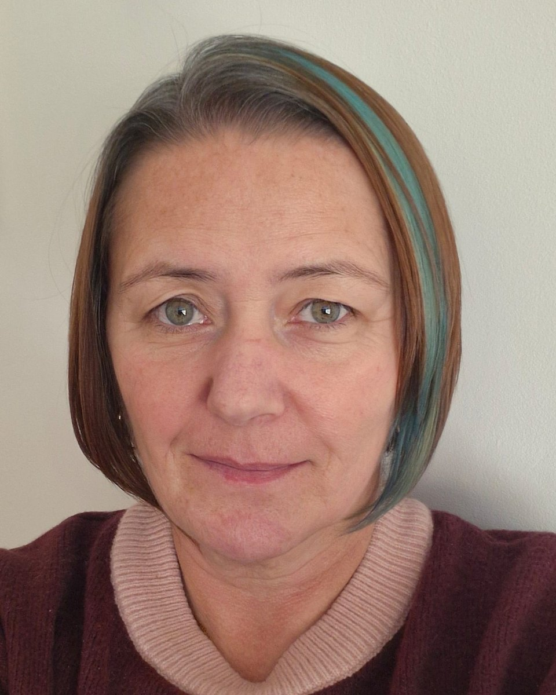

About

Hello, I'm Don.
I'm an HCPC-registered art psychotherapist based in Glasgow. I completed my MSc in Art Psychotherapy with distinction in 2025, with dissertation research on the therapeutic relationship, exploring the role of power, autonomy, identity and mentalization.
Exploring these themes deepened my belief in the importance of mentalizing: staying curious about our own minds and the minds of others, so that people feel understood rather than assumed about.
Dual experience
I bring dual experience to my work: professional training alongside personal experience of using mental health services. I know what it can feel like to sit on the other side of the therapeutic relationship, to wait, to be assessed, and sometimes to feel misunderstood.
Before training as an art psychotherapist, I worked as a peer support worker and trained as a WRAP (Wellness Recovery Action Plan) facilitator. Those roles taught me that people are the experts on their own lives. They also taught me that both peer workers and therapists hold safe, clear boundaries while staying warm, person-centred and trauma-informed. I still bring those values into every session:
- Collaboration. We work things out together.
- Mutuality. Respect flows both ways in the room.
- You are the expert on you. I don't interpret your artwork for you. We wonder about it together.
How I work
At the heart of my work is what's called a mentalizing stance. That means staying curious and "not knowing". I'm not the expert on your life or your mind; you are. Instead, we think together, exploring through art-making and conversation whatever is going on for you.
That might be something happening in your life now, or difficulties from the past that still have an impact today. Together we can slow things down, wonder about what might be going on, and look at experiences from different angles, including the moments when we misunderstand each other.
My practice is mentalization-informed, drawing on principles from mentalization and Mentalization-Based Treatment (MBT), held within a person-centred and trauma-informed approach. It is also neurodivergent-affirming: clear structure, predictable routines, and respect for different ways of thinking and communicating.
Everyone is welcome
Wondering Spaces is an inclusive and affirming space. I welcome people of all ethnicities, cultures and faiths, all genders and sexualities, disabled and non-disabled people, neurodivergent people, and people from all social and economic backgrounds.
Identity, power and inequality shape our lives and our mental health. These can be explored in therapy if and when you choose. I continue to reflect on my own position and assumptions through supervision and ongoing learning.
If you need any adjustments to take part, please let me know.
Professional roles
- Coordinator of the British Association of Art Therapists' special interest group on personality difficulties
- Previously dual experience advisor to the editorial board of the International Journal of Art Therapy (2024 to 2026)
- Previously co-coordinator of BAAT's dual experience special interest group (2023 to 2025)
Professional standards
- Registered with the Health and Care Professions Council (HCPC)
- Full member of the British Association of Art Therapists (BAAT)
- Member of the PVG Scheme (Disclosure Scotland)
- Professional indemnity insurance and regular clinical supervision